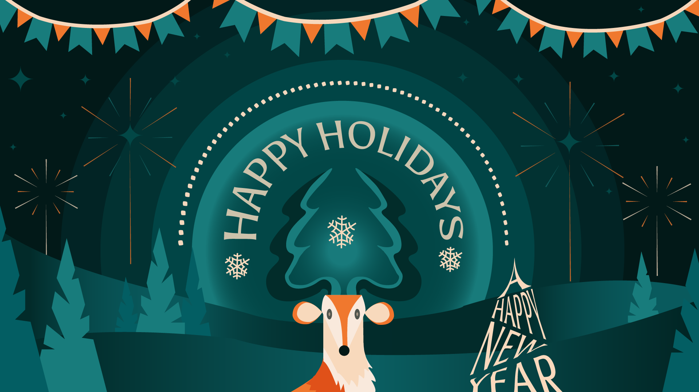

Projecten

Dit project heb ik gemaakt in het zesde middelbaar. De opdracht was om een surrealistische wereld te creëren in Photoshop. Het doel was om verschillende losse elementen samen te voegen tot een geloofwaardig geheel. Ik ben trots op dit werk, omdat ik erin geslaagd ben om de afzonderlijke onderdelen te combineren zodat het nauwelijks opvalt dat het uit meerdere losse stukken bestaat. Door aandacht te besteden aan details zoals kleurcorrectie, schaduwen en overgangen, heb ik een beeld gecreëerd dat echt als één geheel aanvoelt. Het proces was niet alleen een uitdaging, maar ook een geweldige leerschool waarin ik mijn technische vaardigheden en creatieve denkvermogen verder kon ontwikkelen. Bovendien heb ik destijds een heel goed cijfer voor dit project gekregen.
Deze illustratie is gemaakt als permanente evaluatie op school voor het vak Illustrator. De opdracht was om een bestaande afbeelding zo nauwkeurig mogelijk na te maken. Ik heb veel aandacht besteed aan details, zoals de vormen, kleuren en compositie, om het ontwerp zo goed mogelijk te reproduceren. Vooral het rendier en de teksten waren uitdagend, maar ik ben tevreden met hoe ze zijn gelukt. Deze opdracht heeft me veel geleerd over werken met vectoren en het belang van precisie in design. Ik ben trots op het eindresultaat!


Deze foto van mijn paard Armani heb ik een paar jaar geleden bewerkt met Photoshop. De foto werd genomen toen de hoefsmid er was. Ik wilde graag een mooie foto van Armani om op groot formaat af te drukken en in mijn kamer op te hangen. Alleen vond ik het jammer dat de hoefsmid ook op de foto stond, dus heb ik geprobeerd om hem weg te werken. Ik vind het resultaat erg geslaagd, omdat je nauwelijks kunt zien dat de foto bewerkt is. Zeker omdat ik toen nog nooit met Photoshop gewerkt had.
Dit was de opdracht voor het vak Digital branding. Ik heb hier een persoonlijk merk voor mezelf gecreeërd. Na een uitgebreide onderzoeksfase waarin ik mijn kernwaarden, kwaliteiten en visuele voorkeuren heb onderzocht, ben ik aan de slag gegaan met het ontwerpen van een logo dat mijn identiteit weerspiegelt. Het logo is opgebouwd uit unieke, organische lettervormen, De afgeronde vormen in combinatie met een stevige verticale basis geven het geheel een balans tussen speelsheid en structuur. De kleurkeuze speelt hierbij een belangrijke rol. De diepe groentint van de achtergrond straalt rust en vertrouwen uit, terwijl het lichtere groen van de letters zorgt voor een zacht, vriendelijk contrast. Met dit logo heb ik geprobeerd mijn merkidentiteit visueel te vangen: een combinatie van creativiteit, eigenheid en consistentie. Het dient als een krachtig fundament voor mijn verdere communicatie en positionering in de digitale wereld.